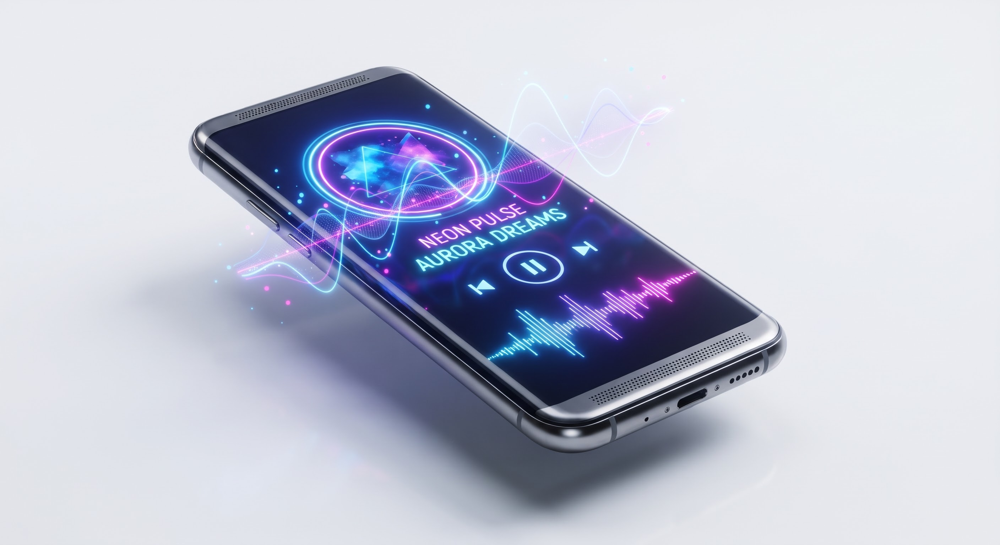

Free Online Audio Tools & Utilities
Welcome to MiMusic.net. Discover our complete collection of browser-based audio tools designed for volume boosting, spatial sound, frequency testing, and sound cleanups without installing any software.
Welcome to MiMusic.net. Discover our complete collection of browser-based audio tools designed for volume boosting, spatial sound, frequency testing, and sound cleanups without installing any software.
Boost your mobile audio and media player volume beyond maximum limits safely.
Eject water and dust from your phone speakers using high-frequency sound waves.
Convert standard stereo tracks into immersive 3D rotating surround sound.
Modify audio playback speed and musical pitch in real-time online.
Enhance speech intelligibility and voice clarity in audio recordings.
Amplify low frequencies and give punchy deep bass to your tracks.
Extract clean MP3 audio tracks directly from MP4 video files locally.
Measure Bluetooth headphone delay and sound sync lag in milliseconds.
Measure ambient room noise levels in decibels using your microphone.
Test your ear frequency range and hearing limits with custom pure tones.
Flip music and voice recordings backward to create unique audio effects.
Generate brainwave entrainment frequencies for focus, meditation, and sleep.
MiMusic.net provides professional-grade, browser-based audio tools designed to give you complete control over your sound experience. Whether you need to clean trapped water from your smartphone speakers, boost low audio tracks, convert video formats, or test your hearing range, our platform delivers instant performance right inside your web browser.

All processing is performed locally on your device via HTML5 and the Web Audio API, guaranteeing absolute file privacy and lightning-fast execution without requiring external application installations.
Yes! Every single tool and utility on our platform is 100% free to use with no hidden subscription fees or registration walls.
No installation is required. All utilities run directly inside modern web browsers like Google Chrome, Firefox, Safari, and Edge on both mobile and desktop devices.
Absolute privacy is guaranteed. Because our tools leverage client-side browser processing, your personal audio and video files never leave your device.